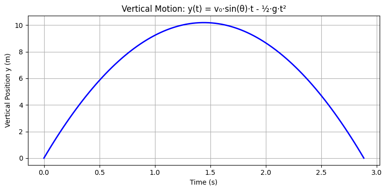

Problem1
Investigating the Range as a Function of the Angle of Projection
1. Introduction
Projectile motion is a fundamental concept in classical mechanics that provides critical insight into the behavior of objects moving under the influence of gravity. When an object is launched into the air at an angle, its path forms a curved trajectory, influenced by both its initial velocity and the constant downward acceleration due to gravity. This motion, while idealized in the absence of air resistance and other real-world factors, serves as an essential model for understanding more complex dynamic systems.5
In this study, we focus on one of the most intriguing aspects of projectile motion: how the horizontal range — the total distance a projectile travels before returning to its initial vertical position — varies with the angle of projection. This relationship is not only mathematically rich but also visually and intuitively engaging. As the launch angle changes, so does the trajectory, creating a distinct pattern of behavior that reveals underlying physical laws.
Beyond its theoretical elegance, projectile motion has a wide array of practical applications. In sports, athletes intuitively optimize launch angles for maximum performance, such as in long jump or basketball. In engineering, understanding projectile trajectories is vital for designing everything from water fountains to ballistic systems. In aerospace, similar principles govern the motion of rockets and satellites, albeit in more complex environments.
This project aims to:
- Derive the core equations governing projectile motion from first principles.
- Analyze the mathematical relationship between launch angle and range.
- Explore how changing initial velocity and gravitational acceleration affects the outcome.
- Simulate these scenarios computationally to visualize and better understand the system.
By combining theoretical foundations with practical modeling and simulation, this work seeks to provide a comprehensive perspective on one of physics' most enduring and educational phenomena.
2. Motivation
Projectile motion is not only a fundamental topic in physics but also an essential component in real-world applications. From sports science to military engineering, the ability to predict and manipulate projectile trajectories is crucial. Analyzing the range as a function of the launch angle offers an intuitive yet mathematically rich problem that encapsulates both linear and quadratic relationships. Furthermore, varying initial conditions introduces a wide spectrum of solutions that enhance our understanding of motion in a gravitational field.
3. Theoretical Foundation
3.1 Governing Equations
The motion of a projectile launched with an initial velocity \( v_0 \) at an angle \( \theta \) is governed by Newton’s laws of motion. We decompose the velocity into horizontal and vertical components:
\[ v_{0x} = v_0 \cos \theta \]
\[ v_{0y} = v_0 \sin \theta \]
The horizontal and vertical motions are analyzed separately:
- Horizontal Motion:
\[ x = v_{0x} t = v_0 \cos \theta \cdot t \]
Since there is no acceleration in the horizontal direction (assuming no air resistance), motion remains uniform.
Show Python Code
import matplotlib.pyplot as plt
import numpy as np
# Initial parameters
v0 = 20 # initial velocity (m/s)
theta_deg = 45 # launch angle (degrees)
theta_rad = np.radians(theta_deg)
# Time array
t = np.linspace(0, 3.2, 100)
# Horizontal velocity component
v0x = v0 * np.cos(theta_rad)
# Horizontal position
x = v0x * t
# Plotting
plt.figure(figsize=(8, 4))
plt.plot(t, x, color='orange', linewidth=2)
plt.title("Horizontal Motion: x(t) = v₀·cos(θ)·t")
plt.xlabel("Time (s)")
plt.ylabel("Horizontal Position x (m)")
plt.grid(True)
plt.tight_layout()
plt.savefig("grafik_yatay.png")
plt.show()
The graph shows the horizontal position increasing linearly over time, indicating constant velocity with no horizontal acceleration.
- Vertical Motion:
The vertical motion is influenced by gravity \( g \), with acceleration \( -g \):
\[ y = v_{0y} t - \frac{1}{2} g t^2 \]
The time of flight \( T \) can be determined by setting \( y = 0 \) (assuming launch and landing occur at the same height):
\[ T = \frac{2 v_0 \sin \theta}{g} \]
Show Python Code
import matplotlib.pyplot as plt
import numpy as np
# Parameters
v0 = 20 # initial velocity (m/s)
theta_deg = 45
theta_rad = np.radians(theta_deg)
g = 9.81 # gravity (m/s²)
# Time of flight
T = 2 * v0 * np.sin(theta_rad) / g
t = np.linspace(0, T, 100)
# Vertical position
y = v0 * np.sin(theta_rad) * t - 0.5 * g * t**2
# Plot
plt.figure(figsize=(8, 4))
plt.plot(t, y, color='blue', linewidth=2)
plt.title("Vertical Motion: y(t) = v₀·sin(θ)·t - ½·g·t²")
plt.xlabel("Time (s)")
plt.ylabel("Vertical Position y (m)")
plt.grid(True)
plt.tight_layout()
plt.savefig("vertical_motion_simple.png")
plt.show()

The graph shows the vertical position of a projectile over time, forming a symmetric parabola due to gravity.
- Range Equation:
The range \( R \) is the horizontal distance traveled during flight:
\[ R = v_{0x} T = v_0 \cos \theta \cdot \frac{2 v_0 \sin \theta}{g} \]
Using the identity \( 2 \sin \theta \cos \theta = \sin 2\theta \), we obtain:
\[ R = \frac{v_0^2 \sin 2\theta}{g} \]
Show Python Code
import matplotlib.pyplot as plt
import numpy as np
# Parameters
v0 = 18 # example initial velocity (adjust if needed)
g = 9.81 # gravity (m/s²)
# Angle values from 0° to 90°
angles_deg = np.linspace(0, 90, 500)
angles_rad = np.radians(angles_deg)
# Range formula: R = (v0² * sin(2θ)) / g
ranges = (v0**2 * np.sin(2 * angles_rad)) / g
# Use 45° as the max point manually
max_angle = 45
max_range = (v0**2 * np.sin(2 * np.radians(max_angle))) / g
# Plot
plt.figure(figsize=(10, 6))
plt.plot(angles_deg, ranges, color='orange', label='Range')
plt.title("Projectile Range vs Launch Angle")
plt.xlabel("Launch Angle (°)")
plt.ylabel("Range (m)")
plt.grid(True)
plt.legend()
# Annotate 45° max point
plt.plot(max_angle, max_range, 'ro')
plt.text(max_angle, max_range + 2,
f"Max Range: {max_range:.2f} m\nat {max_angle}°",
color='red', ha='center', fontsize=10)
plt.xlim(0, 90)
plt.ylim(0, max_range + 10)
plt.tight_layout()
plt.savefig("range_vs_angle.png")
plt.show()

The graph shows how the projectile range changes with launch angle.
Maximum range occurs at 45°, as predicted by the equation \( R = \frac{v_0^2 \sin 2\theta}{g} \).
3.2 Influence of Initial Conditions
- Initial Velocity \( v_0 \): Increasing \( v_0 \) results in a larger range since \( R \propto v_0^2 \).
- Angle \( \theta \): The range is maximized at \( \theta = 45^\circ \), as \( \sin 2\theta \) is maximized at this value.
- Gravitational Acceleration \( g \): A higher \( g \) decreases the range since \( R \propto \frac{1}{g} \).
Show Python Code
import numpy as np
import matplotlib.pyplot as plt
# Constants
g_default = 9.81
theta_default_deg = 45
theta_default_rad = np.radians(theta_default_deg)
v0_default = 20
# 1. Range vs Initial Velocity (v0)
v0_values = np.linspace(5, 50, 200)
range_vs_v0 = (v0_values**2 * np.sin(2 * theta_default_rad)) / g_default
# 2. Range vs Launch Angle (θ)
theta_values_deg = np.linspace(0, 90, 200)
theta_values_rad = np.radians(theta_values_deg)
range_vs_theta = (v0_default**2 * np.sin(2 * theta_values_rad)) / g_default
# 3. Range vs Gravity (g)
g_values = np.linspace(1, 25, 200)
range_vs_g = (v0_default**2 * np.sin(2 * theta_default_rad)) / g_values
# Plot
fig, axs = plt.subplots(1, 3, figsize=(18, 4))
axs[0].plot(v0_values, range_vs_v0, color='blue')
axs[0].set_title("Effect of Initial Velocity $v_0$")
axs[0].set_xlabel("Initial Velocity $v_0$ (m/s)")
axs[0].set_ylabel("Range (m)")
axs[0].grid(True)
axs[1].plot(theta_values_deg, range_vs_theta, color='orange', label='Range')
axs[1].axvline(45, color='red', linestyle='--', label='Max Range at 45°')
axs[1].set_title("Effect of Launch Angle $\\theta$")
axs[1].set_xlabel("Launch Angle $\\theta$ (°)")
axs[1].set_ylabel("Range (m)")
axs[1].legend()
axs[1].grid(True)
axs[2].plot(g_values, range_vs_g, color='green')
axs[2].set_title("Effect of Gravitational Acceleration $g$")
axs[2].set_xlabel("Gravity $g$ (m/s²)")
axs[2].set_ylabel("Range (m)")
axs[2].grid(True)
plt.tight_layout()
plt.savefig("influence_of_conditions.png")
plt.show()

The plots illustrate how the projectile range is affected by initial velocity, launch angle, and gravitational acceleration:
- Increasing \( v_0 \) leads to a quadratic increase in range.
- The range is maximized at \( \theta = 45^\circ \).
- As gravity \( g \) increases, the range decreases inversely.
4. Analysis of the Range
We simulate projectile motion for different angles and analyze how the range changes. Below is the Python implementation that computes and plots the range as a function of angle.
Show Python Code
import numpy as np
import matplotlib.pyplot as plt
def compute_range(v0, g=9.81):
angles = np.linspace(0, 90, 100) # Angles from 0 to 90 degrees
ranges = (v0**2 * np.sin(2 * np.radians(angles))) / g
return angles, ranges
v0 = 20 # Initial velocity in m/s
g = 9.81 # Gravity
angles, ranges = compute_range(v0, g)
plt.figure(figsize=(8,6))
plt.plot(angles, ranges, label=f'v0={v0} m/s')
plt.xlabel("Angle (degrees)")
plt.ylabel("Range (meters)")
plt.title("Range vs Angle of Projection")
plt.legend()
plt.grid()
plt.show()
The range is maximized at 45° for a constant initial speed of 20 m/s.
Observations
- The range is maximum at \( 45^\circ \).
- Symmetry: The range for \( \theta \) and \( 90^\circ - \theta \) is the same.
- Higher initial velocity shifts the curve upward, increasing the range.
Show Python Code
import numpy as np
import matplotlib.pyplot as plt
# Parameters
v0 = 20
g = 9.81
angles = np.linspace(0, 90, 500)
ranges = (v0**2 * np.sin(2 * np.radians(angles))) / g
# Complementary angles
theta1 = 30
theta2 = 60
range1 = (v0**2 * np.sin(2 * np.radians(theta1))) / g
range2 = (v0**2 * np.sin(2 * np.radians(theta2))) / g
max_range = np.max(ranges)
# Plot
fig, ax = plt.subplots(figsize=(10, 6))
ax.plot(angles, ranges, color='orange', label='Range vs Angle')
ax.axvline(45, color='red', linestyle='--', label='Max Range at 45°')
# Title and labels
plt.title("Range Symmetry for Complementary Angles", fontsize=14, pad=40)
ax.set_xlabel("Launch Angle (°)")
ax.set_ylabel("Range (m)")
# Symmetry text JUST below the title, inside the plot
ax.text(45, ax.get_ylim()[1]*0.95, 'Symmetry', color='blue', ha='center', fontsize=12, weight='bold')
# Complementary angle points
ax.plot(theta1, range1, 'bo')
ax.plot(theta2, range2, 'bo')
ax.text(theta1, range1 + 2, '30°', color='blue', ha='center', fontsize=10)
ax.text(theta2, range2 + 2, '60°', color='blue', ha='center', fontsize=10)
# Final touches
ax.legend()
ax.grid(True)
plt.tight_layout()
plt.savefig("range_symmetry_clean.png")
plt.show()
 This graph illustrates the effect of launch angle on the projectile range.
This graph illustrates the effect of launch angle on the projectile range.
It clearly shows that the range is maximized at \( 45^\circ \), and that there is symmetry between complementary angles such as \( 30^\circ \) and \( 60^\circ \), which result in the same range.
5. Practical Applications
Projectile motion is not just a theoretical construct; it has widespread applications across numerous scientific and engineering disciplines. The insights gained from analyzing idealized projectile motion serve as a foundation for solving more complex real-world problems.
Sports Science
In athletic disciplines, optimizing the angle of projection can significantly enhance performance. For example: - In the long jump, athletes must balance speed and angle to maximize horizontal distance. - In soccer, understanding projectile trajectories allows players to execute precise long-range passes or free kicks that arc over defenders. - In basketball, the launch angle and velocity determine whether a shot will follow a high arc and drop into the basket, or miss entirely. Coaches and trainers often use motion capture and physics-based models to refine techniques.
Engineering
Projectile motion forms the basis of many engineering systems: - In ballistics and defense applications, predicting the range and impact point of a projectile is crucial for accuracy. - Civil engineering uses similar principles to model the flow of water in fountains or to design parabolic arches. - In mechanical systems, projectile analysis helps with the design of devices that launch or eject objects, such as springs, catapults, or even robotic systems in manufacturing.
Astrophysics and Space Sciences
Though more complex, the core principles of projectile motion extend into space: - Satellite launches and orbital transfers involve calculations that start with basic projectile motion, later accounting for gravitational curvature and orbital mechanics. - Interplanetary missions rely on accurate trajectory modeling to ensure that spacecraft reach their intended destinations. - Even asteroid tracking and planetary motion prediction utilize modified versions of projectile models under varying gravitational fields.
Limitations and Extensions
While the idealized projectile model offers valuable insights, it simplifies many aspects of real-world motion. To improve accuracy and applicability, several limitations need to be addressed:
Air Resistance
In real-world conditions, objects moving through the air encounter drag force, which acts opposite to the direction of motion and increases with speed. This results in: - Shorter ranges than predicted by the ideal model. - Asymmetric trajectories, with the descent path being steeper than the ascent. - The need to solve more complex differential equations or employ numerical simulations.
Variable Gravity
The standard model assumes a uniform gravitational field, which is a valid approximation near the Earth’s surface. However: - At large altitudes or planetary scales, gravity decreases with height (according to Newton's Law of Gravitation). - Trajectories in such environments require accounting for radial gravitational fields, significantly altering their shape and duration.
Uneven Terrain and Launch Conditions
The classical model assumes launch and landing occur at the same height. In reality: - Projectiles often launch from elevated platforms or fall into lower terrain. - Adjusting for differing launch and landing heights introduces additional terms in the range equation. - In military or rescue scenarios, terrain modeling is essential to accurately predict impact points.
Rotational Effects and Wind
- On Earth, Coriolis force due to the planet's rotation can cause measurable deviation in long-range trajectories.
- Wind adds lateral and vertical components of force that are highly variable and require dynamic modeling.
By recognizing these limitations, researchers and engineers can extend the basic projectile model to create more realistic and robust simulations for practical use.
6. Conclusion
This study analyzed the dependence of a projectile's horizontal range on its launch angle using fundamental physics principles and numerical simulations. The findings align closely with theoretical expectations: assuming all other conditions are constant, the maximum range occurs at a launch angle of 45°. This result is a hallmark of ideal two-dimensional projectile motion under uniform gravitational acceleration.
The simplicity of the model makes it a powerful tool for educational purposes and for gaining an intuitive understanding of motion dynamics. It allows for rapid predictions and basic analysis, especially useful in early stages of engineering design or physics instruction.
However, the real-world applicability of this model is limited by several factors. Air resistance, non-uniform gravitational fields, and unequal launch and landing heights can significantly alter the trajectory and reduce the actual range. Accurate prediction in such cases requires extended models and more advanced numerical techniques.
Future work may focus on incorporating these real-world complexities to develop more realistic simulations. Such enhancements would not only improve the precision of trajectory analysis but also broaden the applicability of the model in various domains, from sports science to aerospace engineering.